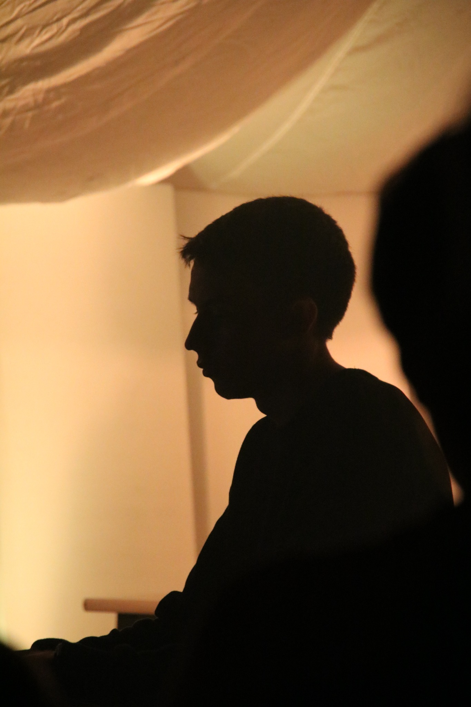
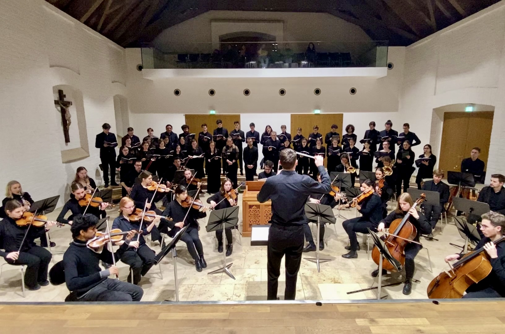
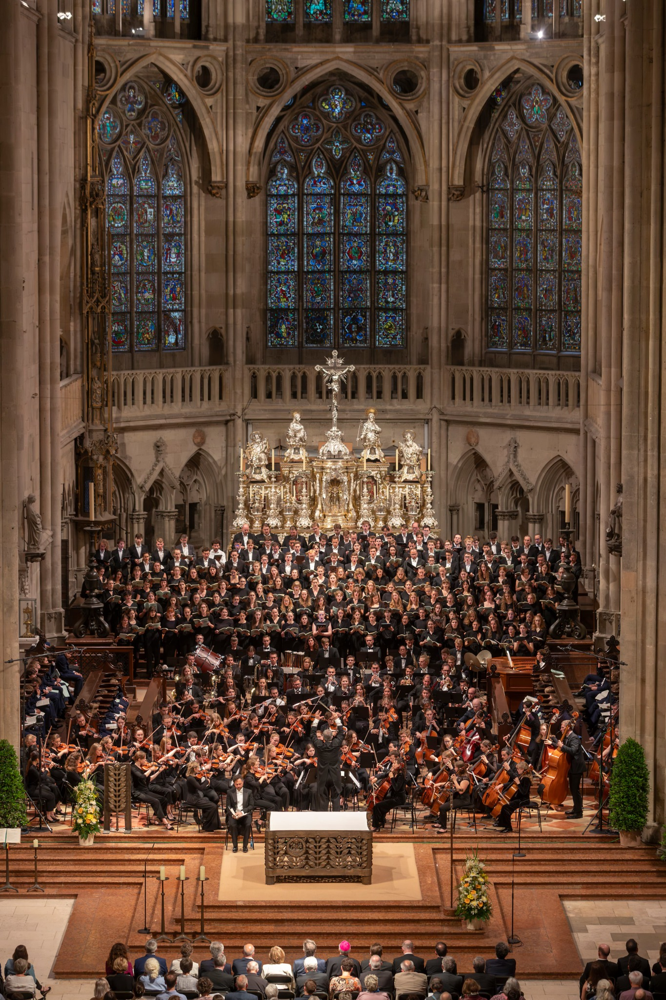
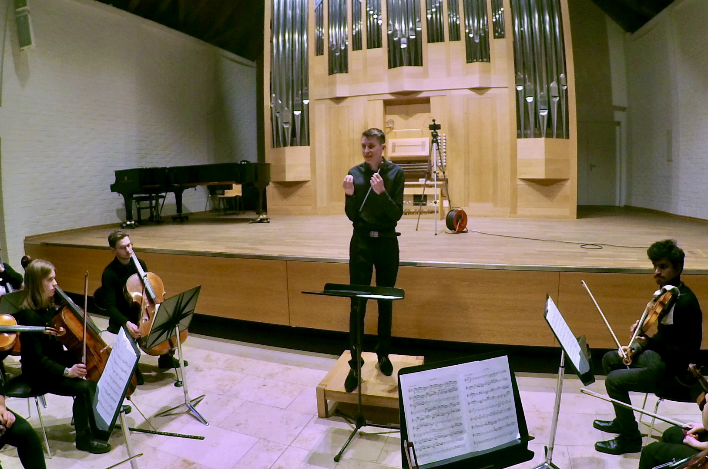

Klavier
Begleitung und Korrepetition
Am Klavier stehen für mich das gemeinsame Atmen, das flexible Reagieren und die Unterstützung einer musikalischen Linie im Mittelpunkt.
Projekte
Musikalische Projekte entstehen für mich im Zusammenspiel vieler unterschiedlicher Aufgaben: aus einer ersten Idee, sorgfältiger Vorbereitung, gemeinsamer Probenarbeit und dem besonderen Moment einer Aufführung. Auf dieser Seite möchte ich ausgewählte Stationen und Arbeitsbereiche sichtbar machen.

Ensemble und Konzert
Besonders prägend ist für mich die Zusammenarbeit mit Chören, Instrumentalistinnen und Instrumentalisten. Aus vielen einzelnen Stimmen entsteht durch intensive Probenarbeit ein gemeinsamer musikalischer Ausdruck.
Dabei gehören klangliche Vorstellung, aufmerksames Zuhören und eine klare musikalische Kommunikation unmittelbar zusammen.

Konzertprojekte
Große Kirchenräume schaffen besondere akustische und atmosphärische Bedingungen. Architektur, Nachhall, Aufstellung und musikalische Besetzung beeinflussen unmittelbar, wie ein Werk erlebt wird.
Gerade bei größeren Konzertprojekten fasziniert mich das Zusammenwirken von Chor, Orchester, Raum und Publikum. Die musikalische Vorbereitung endet dabei nicht mit dem Erlernen der Noten, sondern schließt Klangbalance, Sprache, Tempo und räumliche Wirkung mit ein.
Arbeitsbereiche
Unterschiedliche musikalische Aufgaben verlangen unterschiedliche Perspektiven. Klavierbegleitung und Ensembleleitung ergänzen sich dabei auf besondere Weise.

Klavier
Am Klavier stehen für mich das gemeinsame Atmen, das flexible Reagieren und die Unterstützung einer musikalischen Linie im Mittelpunkt.

Leitung
In der Ensembleleitung verbinden sich musikalische Vorbereitung, Körpersprache und die gemeinsame Entwicklung eines tragfähigen Klangs.
Im Aufbau
Diese Seite soll nach und nach um konkrete Programme, Rückblicke, Aufnahmen und weitere Fotografien wachsen. Auch Einblicke in besondere Orgeln und später in die handwerkliche Arbeit des Orgelbaus sollen hier ihren Platz finden.
So entsteht mit der Zeit kein starres Archiv, sondern eine lebendige Sammlung musikalischer und handwerklicher Stationen.
Kontakt
Für musikalische Anfragen, gemeinsame Vorhaben oder einen persönlichen Austausch erreichst du mich über die Kontaktseite.
Kontakt aufnehmen